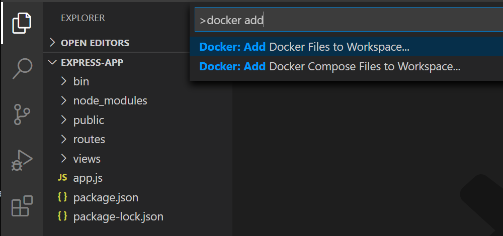
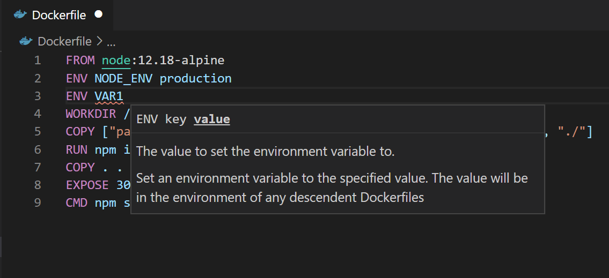
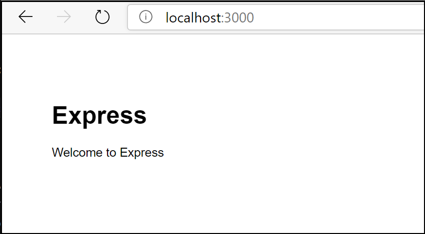
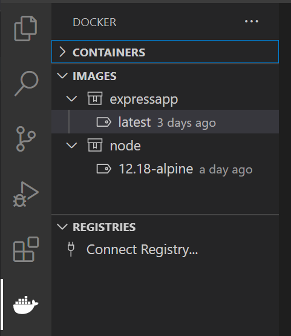
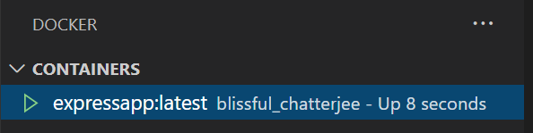
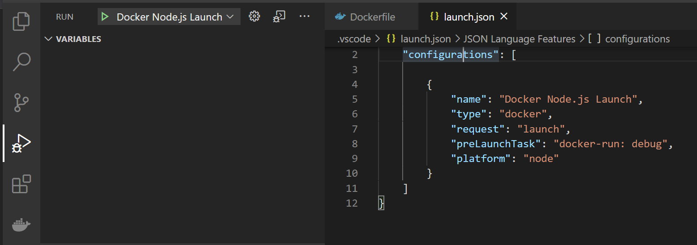
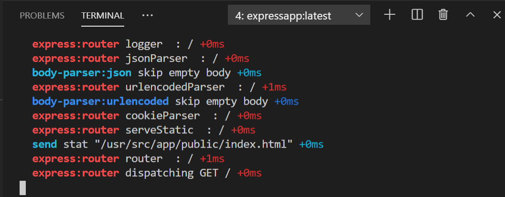

Node.js in a container
In this guide you will learn how to:
- Create a
Dockerfilefile for an Express Node.js service container - Build, run, and verify the functionality of the service
- Debug the service running within a container
Prerequisites
- Both Docker and the VS Code Docker extension must be installed as described in the overview
- Node.js version 10 or later
Create an Express Node.js application
Create a folder for the project.
Open a development command prompt in the project folder and create the project:
npx express-generator npm install
Add Docker files to the project
Open the project folder in VS Code.
Open the Command Palette (
kb(workbench.action.showCommands)) and use Docker: Add Docker Files to Workspace... command:
Select Node.js when prompted for the application platform.
Select either Yes or No when prompted to include Docker Compose files. Compose is typically used when running multiple containers at once.
Enter
3000when prompted for the application port.
The extension creates Dockerfile and .dockerignore files. If you elected to include Docker Compose files, docker-compose.yml and docker-compose.debug.yml will be generated as well. Finally, the extension will create a set of VS Code tasks in .vscode/tasks.json for building and running the container (in both debug- and release-configurations) and a launch debug configuration in .vscode/launch.json for debugging the service within the container.
Add an environment variable to the image
The Docker extension helps you author Dockerfiles by using IntelliSense to provide auto-completions and contextual help. To see this feature in action, add an environment variable to your service image by following these steps:
Open the
Dockerfilefile.Use
ENVinstruction to add an environment variable to the service container image.
Note how the Docker extension lists all available Dockerfile instructions and describes the syntax.
The Docker extension uses the
basestage of theDockerfileto create a debug version of the container image for your service. Put the environment variable definition in thebasestage to have this variable available in both debug and release versions of the container image.Save the
Dockerfilefile.
Run the service locally
Open a terminal (
kb(workbench.action.terminal.toggleTerminal)).Enter
npm run startto start the application:> express-app@0.0.0 start /Users/user/code/scratch/express-app > node ./bin/wwwOpen the web browser and navigate to http://localhost:3000. You should see a page similar to the following:

When done testing, type
kbstyle(Ctrl+C)in the terminal.
Build the service image
Open the Command Palette (
kb(workbench.action.showCommands)) and select the Docker Images: Build Image... command.Open the Docker Explorer and verify that the new image is visible in the Images tree:

Run the service container
Right-click on the image built in the previous section and select Run or Run Interactive. The container should start and you should be able to see it in the Docker Containers tree:

Open the web browser and navigate to http://localhost:3000. You should see a page similar to the following:
When done testing, right-click the container in the Containers tree and select Stop.
Debug in the service container
When the Docker extension adds files to the application, it also adds a VS Code debugger configuration in .vscode/launch.json for debugging the service when running inside a container. The extension detects the protocol and port used by the service and points the browser to the service.
Set a breakpoint in the
get()handler for the'/'route inroutes/index.js.Make sure the Docker Node.js Launch debugger configuration is selected.

Start debugging (use the
kb(workbench.action.debug.start)key).- The Docker image for the service builds.
- The Docker container for the service runs.
- The browser opens to the (random) port mapped to the service container.
- The debugger stops at the breakpoint in
index.js.
Note that, because the debugger attaches after the application starts, the breakpoint may missed the first time around; you might have to refresh the browser to see the debugger break on the second try.
You can configure the application to wait for the debugger to attach before starting execution by setting the inspectMode property to
breakin thedocker-run: debugtask intasks.jsonunder thenodeobject.
View the application logs
You can view the logs in VS Code by using the View Logs command on the container:
Navigate to the Docker Explorer.
In the Containers tab, right-click on your container and choose View Logs.

The output will be displayed in the terminal.
Next steps
You're done! Now that your container is ready, you may want to: